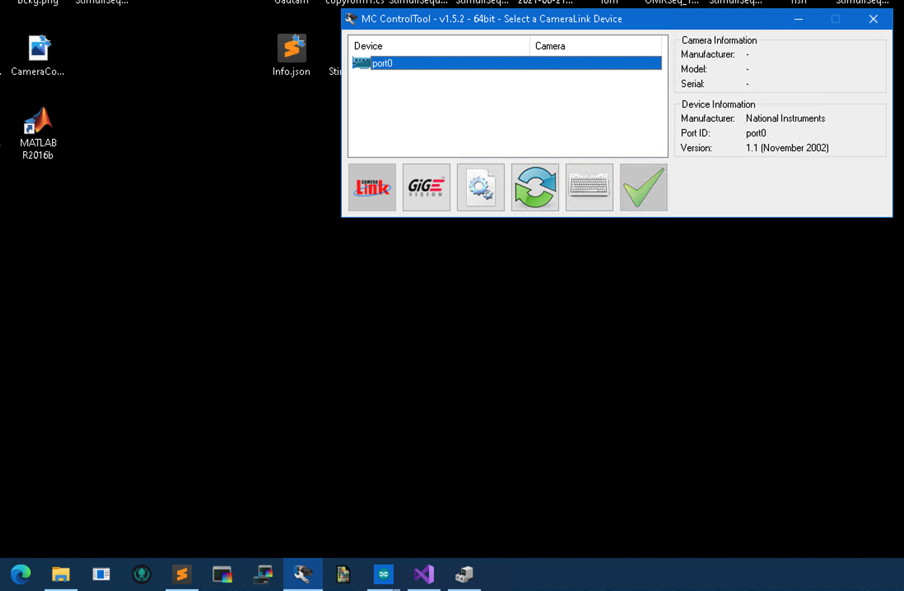
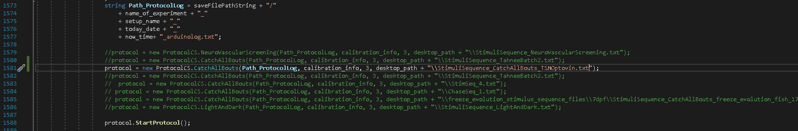
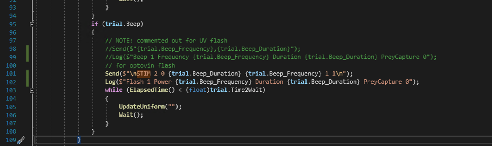

This will show the steps in order to run a zebrafish protocol using the z-tracket pipeline.
Plan and save you protocol click here for details/example here.
Fill up the arena with E3 solution using a pipette with a filter attached to the end click here for details.
Check that the project, fan, arduino and computer are plugged in.
Switch on the projector and turn on the fan dial.
Open the application MC Control Tools and double
click Port 0

user profile 0. To
see if you have maximised the camera frame rate go to the shutter tab
and see that the 700 fps is selected.
Open up the behavioural tracking software
e.g. C:\Users\orger\Desktop\Tom\Adriens_pipeline\z_tracker\Tracker
double click FishTracker.sln.
Open Stimuli server (this is to pair the shader with the project screen).


Open up the Stimuli Server Controller. You should
load the shader protocol, this should be in the directory
C:\Users\orger\Desktop\Adrien\shader_and_stimuli_protocol\Protocol\Protocol_CatchAllBouts.txt.
Open Sublime app and look for a file with a command
move 505 143 403 1 (the number might be different for each
set-up). Enter this command into the stimuli controller panel

Form1.cs and map the filepath of you stimulus sequence to
the protocol variable, and the Arduino port. below is an
example:protocol = new ProtocolCS.CatchAllBouts(Path_ProtocolLog, calibration_info, 3, desktop_path + "\\StimuliSequence_CatchAllBouts.txt");
Note: for a different arduino protocol, e.g. optovin UV flash, click here for details
Start the .sln
Click start on the panel to switch on the camera.

Click Calculate Background to calculate the
background. Wait for a few seconds until no longer “Acquiring” and says
“bg active”. Then tick Update Background to subtract the
background from the fish.
Tick Subtract Background and
Tail Tracking.
To make sure background is correctly subtracted, select the
Subtracted Image option on the far right of the panel and
verify on the screen. If subtracted correctly return to the
raw data view, otherwise re-calculate the background and
update.

Note: for noticably large/small larvae you may need to adjust the separation of the tail segments. To do this adjust the
Larva Sizevariable. The last segment should remain on the tip of the tail even when turning. Zooming in can help with this.
Fill in the meta data about the experiment. For example: “Strain/Species”, “Age”, “Tank”.
Click Save Data. Create a folder for your set of
experiments and in there have a specific folder for each fish. >Note:
Each folder name will have a timestamp concatenated to your experiment
name.
The experiment would have start. Cover the opening of the
behaviour arena. And you can hover over the stimuli server
application on the toolbar to see the type of shader project (Don’t
hover over the shader as that will affect the projection.)
When the experiment has ended click Stop Saving Data
then press the red stop on the C# code.
There are two main files: Form1.cs which runs the
applicaiton. The other is CatchAllBoutsProtocol.cs which is
a protocol class that is inherited from a parent class
ClosedLoopAndArduinoProtocol. The CatchAllBoutsProtocol
class contains a rich variety of stimuli e.g. OMR (linear/rotaitonal),
Uniform light, chasing dot, looming, acoustic. For a more tailored
protocol you can define a new protocol and inherit from the
CatchAllBouts:ClosedLoopAndArduinoProtocol class.
Example stimulus sequence for CatchAllBouts protocol
UniformLight UniformLight_Color ForwardOMR ForwardOMR_Speed RotationOMR RotationOMR_Speed RotationOMR_Direction ApproachingDot ApproachingDot_Direction LoomingDot LoomingDot_Direction Beep Beep_Frequency Beep_Duration Time2Wait
1 1 0 0 0 0 0 0 0 0 0 0 0 0 6000
0 0 0 0 0 0 0 1 88 0 0 0 0 0 4000
1 1 0 0 0 0 0 0 0 0 0 0 0 0 10000
0 0 0 0 0 0 0 1 266 0 0 0 0 0 5000
1 1 0 0 0 0 0 0 0 0 0 0 0 0 10000
0 0 0 0 0 0 0 1 273 0 0 0 0 0 9000
1 1 0 0 0 0 0 0 0 0 0 0 0 0 10000
0 0 0 0 0 0 0 1 90 0 0 0 0 0 14000
1 1 0 0 0 0 0 0 0 0 0 0 0 0 10000
For the case where you want to use a UV flash rather than the beep
stimuli. Open CatchAllBoutsProtocol.cs find the lines
Send($"{trial.Beep_Frequency},{trial.Beep_Duration}");
Log($"Beep 1 Frequency {trial.Beep_Frequency} Duration {trial.Beep_Duration} PreyCapture 0");comment this out and write the command you want the Arduino Serial to read e.g.
Send($"\nSTIM 2 0 {trial.Beep_Duration} {trial.Beep_Frequency} 1 1\n");
Log($"Flash 1 Power {trial.Beep_Frequency} Duration {trial.Beep_Duration} PreyCapture 0");This will be the alternative command sent to the arduino. 
Note: you need to specify which COM port the Arduino is connected to if using a different Arduino. This is when constructing the
ProtocolCS.CatchAllBoutsprotcol in theForm1.csscript. e.g. if the arduino is connected to COM4
protocol = new ProtocolCS.CatchAllBouts(Path_ProtocolLog, calibration_info, 4, desktop_path + "\\StimuliSequence_CatchAllBouts_UV.txt");